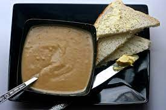

Tombrown

Description
This recipe for preparing tombrown is predominant among West-Africans but
it is enjoyed by people all over the world, because it is not only
appetizing, but also very easy to prepare.
Ingredients
-
tombrown powder, made of grinded fried maize, groundnut, soya beans,
etc.
- sugar
- milk (Diary or non diary)
- water
Steps
- pour your powdered tombrown into a bowl and add water.
- mix until even
- pour mixture into a cooking bowl and bring it to boil
-
you can make it as thick as you want or add more water when it becomes
thicker that you want it
- Ready in 5 to 15 minutes
- serve with sugar and milk
- stir until evenly mixed and serve with bread
Back to homepage